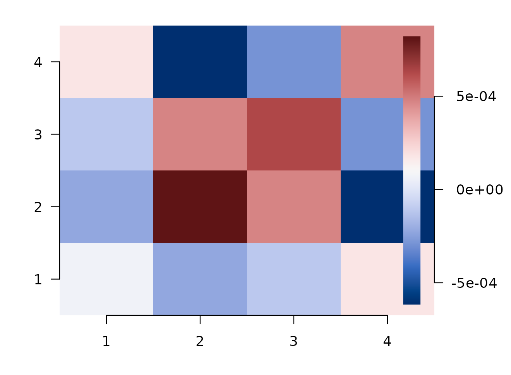

Model-Space Representational Connectivity
Bradley Buchsbaum
2026-05-06
Source:vignettes/Model_Space_Connectivity.Rmd
Model_Space_Connectivity.RmdWhat this vignette is for
You’ve fit RSA in a handful of ROIs and learned how strongly each region tracks each model RDM. Two natural follow-up questions immediately appear:
- Where else in the brain does this same representational geometry live? — i.e. ROI-to-ROI representational connectivity through your model RDMs.
- How do I ask the connectivity question across two different stimulus sets — say items from movie A and items from movie B, where the items themselves are not the same?
rMVPA answers both with one fitted object. A single call to
rsa_model(..., return_fingerprint = TRUE) produces, per ROI
or per searchlight, a small model-space fingerprint vector.
model_space_connectivity() then turns those fingerprints
into the cross-ROI similarity summaries you want — without you having to
refit anything or assemble RDM vectors by hand.
The shared abstraction is pairwise model-space representation per analysis unit. Within-unit RSA and across-unit connectivity are two views of the same fit.
Two kinds of representational connectivity
rMVPA exposes two complementary ways to ask “do these ROIs share representational geometry?” Picking the right one is the single most important decision in this analysis:
| Model-space connectivity (this vignette) |
Feature-RSA connectivity
(vignette("Feature_RSA_Connectivity"))
|
|
|---|---|---|
| Question it answers | Do ROIs project onto the same axes of my declared model RDMs? | Do ROIs predict the same trial-by-trial similarity structure through a learned feature space? |
| What you supply | One or more explicit model RDMs | A feature matrix F (or similarity matrix
S) |
| What gets compared across ROIs | Whitened projections onto the model-RDM subspace (length-K fingerprints, K = number of model RDMs after orthogonalisation) | Predicted RDM vectors of length
n_trials × (n_trials − 1) / 2
|
| Fitting required? | No — just project the neural pair vector onto a fixed orthonormal basis | Yes — cross-validated PLS / PCA / glmnet inside
feature_rsa_model()
|
| Memory per unit | O(K), typically 2–10 numbers | O(n_pairs), can be 10⁴–10⁵ numbers |
| Searchlight-friendly? | Yes — fingerprints fit easily; k-means anchors avoid
n_centers² blow-up |
Marginal — requires file-backed RDM storage and is more expensive to compare across centers |
| Best when | You have specific theoretical RDMs (semantic, visual, motor…) and want to ask which regions express each | You don’t have a clean theoretical RDM and want a model-free, data-driven similarity measure |
| Diagonal of the connectivity matrix | ROI’s strength of model-RDM expression | ROI’s CV-predicted-vs-observed RDM alignment |
A useful rule of thumb: declared model → model-space connectivity; learned model → feature-RSA connectivity. If you find yourself reaching for both, run them both — they make different statistical commitments and frequently agree only partially, which itself is informative.
The mental model in one diagram
items / pair design ───► per-unit pair RSA fit ───► per-unit fingerprint f_u
│
├───► RSA scores (the usual map)
│
└───► F = stack of f_u ────► F · Fᵀ
ROI×ROI
connectivity- A pair design says which item pairs you compare and what your model RDMs predict for each pair.
- For each ROI / searchlight,
train_model.rsa_model()computes the neural pair-dissimilarity vector and regresses it on your model RDMs. Withreturn_fingerprint = TRUEit also stores the standardized projection of the neural pair vector onto an orthonormal basis of the model-RDM subspace. -
model_space_connectivity()collects those projections into a matrixF(ROIs × axes) and reportsF · Fᵀplus its standard decompositions.
The reader who internalizes this picture has already learned 80% of what this vignette teaches.
A first win
We’ll use a small synthetic dataset with 80 trials and four ROIs.
set.seed(2026)
toy <- gen_sample_dataset(D = c(6, 6, 6), nobs = 80, blocks = 4, nlevels = 2)
dset <- toy$dataset
nvox <- sum(dset$mask)
# Four arbitrary ROIs over the active voxels.
region_mask <- NeuroVol(
sample(seq_len(4), size = nvox, replace = TRUE),
space(dset$mask), indices = which(dset$mask > 0)
)Two model RDMs — say, a “category” RDM and a “feature” RDM:
n <- 80L
R_cat <- as.matrix(stats::dist(matrix(rnorm(n * 4), n, 4)))
R_feat <- as.matrix(stats::dist(matrix(rnorm(n * 4), n, 4)))A pair_rsa_design() is a generalization of
rsa_design(). For the within-domain case (one item set,
lower-triangle pairs) the two are interchangeable; we use
pair_rsa_design() here to keep one consistent design API
throughout the vignette.
des <- pair_rsa_design(
items_a = paste0("trial", seq_len(n)),
model = list(category = R_cat, feature = R_feat)
)Fit the RSA model with fingerprint capture turned on, and run it regionally.
m <- rsa_model(
dataset = dset, design = des,
distmethod = "pearson", regtype = "pearson",
return_fingerprint = TRUE
)
reg <- run_regional(m, region_mask, verbose = FALSE)You already get the standard ROI×metric performance table:
reg$performance_table
#> # A tibble: 4 × 3
#> roinum category feature
#> <int> <dbl> <dbl>
#> 1 1 -0.00778 0.00306
#> 2 2 0.0284 -0.00521
#> 3 3 0.0191 0.0155
#> 4 4 -0.0208 0.00748The new piece is the per-ROI fingerprint matrix, attached as an attribute:
fp <- attr(reg, "fingerprints")
fp$scores
#> PC1 PC2
#> 1 0.007484900 0.003418361
#> 2 -0.023224714 -0.016794183
#> 3 -0.002470507 -0.025059651
#> 4 0.019572108 0.009672595And the connectivity summary is one line:
conn <- model_space_connectivity(reg)
round(conn$similarity, 3)
#> 1 2 3 4
#> 1 0 0.000 0.000 0.000
#> 2 0 0.001 0.000 -0.001
#> 3 0 0.000 0.001 0.000
#> 4 0 -0.001 0.000 0.000conn$similarity is the ROI-by-ROI representational
connectivity through the model-RDM subspace. Diagonal entries are each
ROI’s own model-explained strength; off-diagonal entries say how much
two ROIs share that geometry.

ROI-by-ROI model-space connectivity. Diagonal = model-explained strength; off-diagonal = shared geometry through your model RDMs.
That’s the whole loop. The rest of this vignette unpacks what each piece can do.
Fingerprints, in detail
Per ROI, the fingerprint is a length-K vector where K is the rank of
your model-RDM subspace (here K = 2 because we passed two RDMs).
model_space_connectivity() standardizes the fingerprints
and returns several views of F · Fᵀ:
conn$rank
#> [1] 2
dim(conn$scores)
#> [1] 4 2
names(conn)
#> [1] "similarity" "profile_similarity"
#> [3] "component_similarity" "common_similarity"
#> [5] "difference_similarity" "raw_similarity"
#> [7] "residual_similarity" "scores"
#> [9] "raw_model_scores" "model_axis_cor"
#> [11] "model_cor" "eigenvalues"
#> [13] "rank" "basis"
#> [15] "method" "n_pairs_total"
#> [17] "n_pairs_used" "roi_labels"
#> [19] "model_labels" "decomposition_available"| Field | Shape | What it is |
|---|---|---|
scores |
ROIs × axes | The whitened fingerprint matrix F
|
similarity |
ROIs × ROIs |
F · Fᵀ — strength-sensitive ROI
similarity |
profile_similarity |
ROIs × ROIs | Cosine of fingerprints — orientation only |
component_similarity |
list of ROIs × ROIs | One rank-1 matrix per orthogonal axis |
common_similarity |
ROIs × ROIs | The first component (often the shared model axis) |
difference_similarity |
ROIs × ROIs | Sum of the rest (differentiating axes) |
model_axis_cor |
axes × models | How each axis loads on your original RDMs |
If you only care about who is similar to whom in geometry,
look at profile_similarity. If you care about who has
strong representations of these models, look at
similarity and the diagonal.
Pair designs in two flavors
pair_rsa_design() is the unified pair-coordinate system.
It supports two modes.
Within-domain pairs (default)
The classical RSA layout: one item set, lower-triangle pairs.
Equivalent to rsa_design():
classic <- rsa_design(~ R_cat, list(R_cat = R_cat))
paired <- pair_rsa_design(
items_a = paste0("trial", seq_len(n)),
model = list(R_cat = R_cat)
)
identical(paired$model_mat$R_cat, classic$model_mat$R_cat)
#> [1] TRUEBoth produce the same length-n*(n-1)/2 pair vectors and
feed into rsa_model() interchangeably. You can keep using
rsa_design() if you prefer; pair_rsa_design()
is here so the design layer can also handle the cases below.
Cross-domain (between) pairs
When item set A and item set B differ — for example, items shown in
encoding vs retrieval, or items from movie A
vs movie B — the natural pair space is the rectangular
n_a × n_b table, not the lower triangle of one square
RDM.
n_a <- 6L; n_b <- 8L
items_A <- paste0("A", seq_len(n_a))
items_B <- paste0("B", seq_len(n_b))
# Model: a rectangular cross-set RDM (e.g., similarity in a learned embedding)
M_cross <- matrix(rnorm(n_a * n_b), n_a, n_b)
rownames(M_cross) <- items_A
colnames(M_cross) <- items_B
cross_des <- pair_rsa_design(
items_a = items_A,
items_b = items_B,
model = list(M = M_cross),
pairs = "between",
row_idx_a = seq_len(n_a), # which dataset rows are in domain A
row_idx_b = n_a + seq_len(n_b) # which are in domain B
)
length(cross_des$model_mat$M) # n_a * n_b — full rectangular block
#> [1] 48Used with rsa_model(), this design causes the engine to
compute the rectangular neural pair-dissimilarity block —
1 - cor(rows_A, rows_B) — instead of a lower triangle. You
get back per-ROI scores and (with
return_fingerprint = TRUE) per-ROI fingerprints exactly as
in the within-domain case. ROI-to-ROI connectivity through
cross-domain geometry then drops out of the same
model_space_connectivity() call.
Function-valued model entries
Sometimes the model RDM is easier to define as a function of item attributes than as a precomputed matrix:
items <- c("apple", "pear", "plum", "fig")
features <- data.frame(length = c(5, 4, 4, 3), vowels = c(2, 2, 1, 1))
fdiff <- function(a, b, fa, fb) {
abs(fa$length - fb$length) + abs(fa$vowels - fb$vowels)
}
fdes <- pair_rsa_design(
items_a = items,
features_a = features,
model = list(feat_distance = fdiff)
)
fdes$model_mat$feat_distance
#> [1] 1 2 3 1 2 1The function is evaluated once over the pair table; you don’t need to materialize a square matrix.
Searchlight: the n_centers² problem and how to avoid it
Searchlights have ~10⁵–10⁶ centers. The full center-by-center connectivity matrix is too large to materialize (a 10⁵-center matrix is 80 GB at double precision). Two complementary memory wins are built in.
1. Don’t store RDMs; store fingerprints
return_fingerprint = TRUE reduces each center’s neural
pair vector — which can be hundreds of thousands of pair cells for many
trials — to a length-K fingerprint where K is the rank of the model-RDM
subspace (typically 2–10). Memory cost: O(n_centers × K). This is what
makes the rest of the searchlight pipeline tractable.
2. k-means anchors: a smart-seed summary of F · Fᵀ
Instead of materializing the full ROI×ROI matrix, we cluster the
per-center fingerprints with k-means and use the searchlight closest to
each centroid as an anchor. Connectivity becomes an
n_centers × k similarity matrix plus one brain map per
anchor — a “this voxel’s representational geometry resembles anchor j”
map.
res_sl <- run_searchlight(m, radius = 6, method = "standard")
conn_sl <- model_space_connectivity(
res_sl,
k = 20, # number of anchors
scale = "norm", # cosine similarity
random_seed = 1L # reproducible k-means starts
)
names(conn_sl)The returned model_space_anchor_connectivity object
exposes:
| Field | What it is |
|---|---|
anchors |
Center IDs of the chosen anchor searchlights |
cluster_id |
Cluster assignment for every searchlight |
centroids |
The k-means centroids in fingerprint space |
similarity |
n_centers × k matrix of similarities to
each anchor |
vol_results |
Named list of NeuroVol (or
NeuroSurface) — one map per anchor |
Memory is O(n_centers × k) regardless of the model-RDM dimension or the number of trials.
If you already have anchor centers in mind — for example, peak
coordinates from a prior analysis or specific parcels — pass them with
seeds = c(<center IDs>) and the function skips
k-means entirely:
conn_sl <- model_space_connectivity(res_sl, seeds = c(101L, 422L, 1037L))Object zoo
| Class | Constructor | What it holds |
|---|---|---|
pair_rsa_design |
pair_rsa_design() |
A pair table, model RDM vectors, optional nuisance
vectors. Inherits from rsa_design. |
rsa_model |
rsa_model(..., return_fingerprint = TRUE) |
A fittable RSA spec that emits fingerprints alongside the standard scores. |
regional_mvpa_result |
run_regional() |
Per-ROI results. Carries fingerprints in
attr(., "fingerprints") when
return_fingerprint = TRUE. |
searchlight_result |
run_searchlight() |
Per-center results. Same fingerprint attribute. |
rdm_model_space_connectivity |
model_space_connectivity() (regional) |
ROI×ROI similarity matrix and decompositions. |
model_space_anchor_connectivity |
model_space_connectivity()
(searchlight) |
Anchor maps and n_centers × k similarity
matrix. |
Where to go next
- For decorrelating correlated model RDMs before you run any
of the above, see
vignette("RSA")and?rdm_decorrelate. - For the learned-feature-space connectivity path —
predicting one ROI’s RDM from another via a feature-RSA model — see
vignette("Feature_RSA_Connectivity"). The two paths are complementary:model_space_connectivity()works in your declared model-RDM subspace;feature_rsa_connectivity()works in a fitted feature space. - For variance partitioning by signed contrasts, see
vignette("Contrast_RSA"). - For temporal / nuisance pair predictors, see
vignette("Temporal_Confounds_in_RSA")and?temporal_rdm.